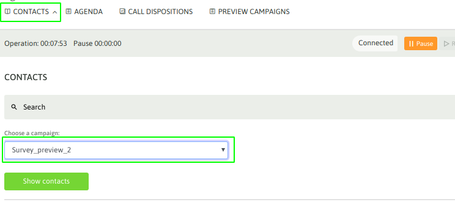
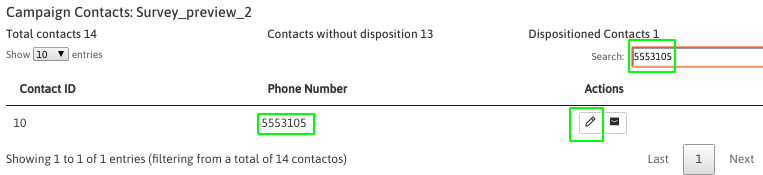
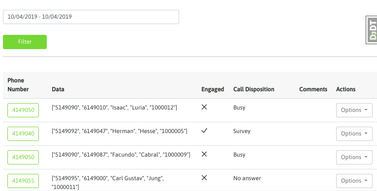

Listado de contactos de la campaña¶
El agente puede ingresar a los contactos de cada campaña a la que se encuentra asignado. Esto se hace ingresando al punto de menú «Contact - Contact list».
Allí se despliega una vista que permite seleccionar la campaña a la cual ingresar para visualizar sus contactos.
Figure 1: campaign contact list
Al listar todos los contactos de la campaña, el agente puede recorrer cada uno de ellos o bien realizar una búsqueda por id de contacto, teléfono, nombre, apellido, etc.

Figure 2: contact search
Por ejemplo podemos buscar un número de teléfono en el listado de contactos, como se ejemplifica en la figura 3.
Figure 3: contact search
La herramienta permite poder editar cualquiera de estos contactos.

Figure 4: contact search
Agendas pendientes¶
El agente puede acceder a su agenda de llamadas pendientes de realizar. En dicha sección se listan todas las entradas que el agente realizó durante la gestión.

Figure 5: Agenda
El agente cuenta con cada contacto agendado y su descripción. A partir de hacer click sobre el número de teléfono automñaticamente se dispara la llamada hacia el teléfono del contacto.
Histórico de calificaciones del agente¶
En este menú el agente podrá listar a todos los contactos que ha calificado a nivel histórico. Por lo tanto el agente puede llevar un control hacia atrás de cada contacto gestionado.
Figure 6: call disposition list
Se puede filtrar por fecha la búsqueda y además el agente podrá ingresar al contacto seleccionado para repasar sus datos o modificar la calificación asignada previamente.

Figure 7: call disposition edit
Como se puede observar, el agente puede modificar los datos de la calificación o del formulario, en caso de tratarse de un contacto calificado con una calificación «de gestión».